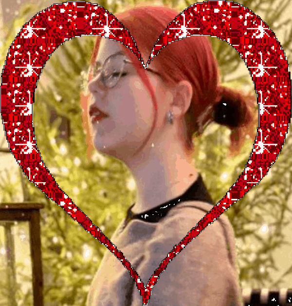

Удивительно, но на календаре уже 14-ое февраля - День всех влюблённых, и, наверное, впервые в жизни, я могу сказать это мой тоже, даже, скорее наш. Ведь сейчас я влюблён. Безумно влюблён, по уши, с концами, безповоротно, я без ума от одной девушки, за встречу с которой я готов на коленях благодарить все высшие силы.
Ничто мне не приносит больше счастья, как проводить с ней время, общаться с ней, даже просто слышать её голос, как она читает стихи или просто рассказывает о своём дне, достаточно для того, чтобы почувствовать тепло на душе. А ведь её счастливой, смеющейся, улыбающейся... Это одна из тех трёх вещей, на которые можно смотреть вечно. И это даже при том, что она настолько красивая, что иногда мне трудно на неё смотреть: я краснею, как маленький мальчик. У меня сжимает сердце, становится тяжело дышать, но мне даже нравится это чувство. Как бы не хотел, я не могу описать, как сильно мне нравятся её глаза, как завораживают её волосы, как привлекают её губы...
Конечно, меня восхищает не только её внешность. Мне нравится её характер, её нрав, то, как она в некоторые моменты серьёзна, решительна и готова к действию и то, как она может быть яркой, весёлой, забавной, а главное, невыносимо милой.
Она никогда не выходит у меня из головы. Где бы я не был, что бы я не делал, я постоянно думаю о ней.
И поэтому сегодня я решил, что скажу всё это своей самой красивой, милой, приятной, умной, заботливой, понимающей, сексуальной, весёлой, но самое главное, единственной и драгоценной девушке - тебе.
